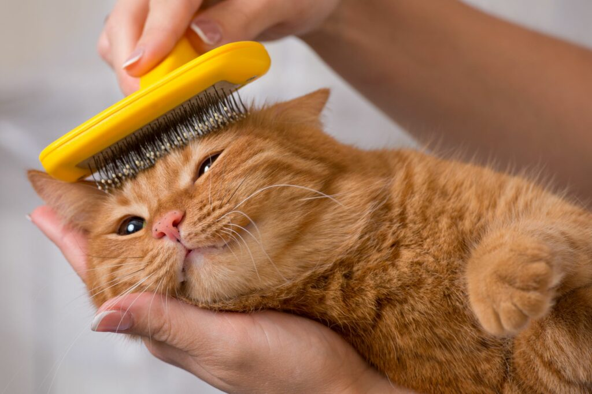
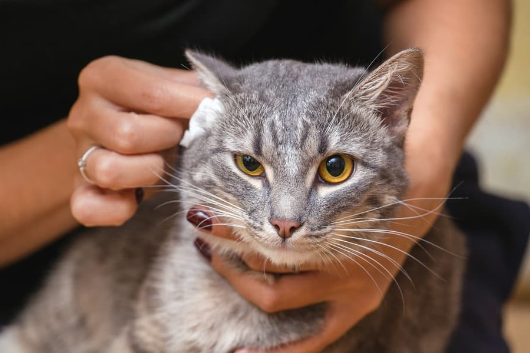
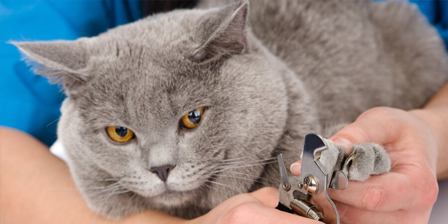
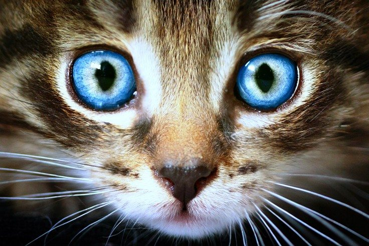

Cats Grooming Tips
Regularly groom your cat by brushing its fur, checking and cleaning ears, trimming nails, and monitoring eyes,
using appropriate tools and positive reinforcement, while scheduling regular veterinary check-ups for overall health.

Skin and Fur Care:
Brushing: Regular brushing helps remove loose hair and prevents matting.
Bathing: Cats are generally good self-groomers and don't require frequent baths. However, if needed, use cat-friendly shampoos.
Flea Control: Use vet-recommended flea control methods to keep your cat's skin healthy.
Ear Care:
Inspection: Regularly check your cat's ears for signs of dirt, redness, or discharge.
Cleaning: If necessary, clean the ears with a vet-approved ear cleaner. Avoid inserting anything deep into the ear canal.


Paw and Nail Care:
Trimming Nails: Use cat nail clippers to trim the tips of the nails. Be cautious not to cut into the quick.
Inspect Paws: Check for cuts, foreign objects, or signs of irritation on paw pads.
Eyes Care:
Cleaning: Use a damp, soft cloth to gently wipe away any discharge from the corners of the eyes.
Check for Redness: Monitor for signs of redness, cloudiness, or excessive tearing, which may indicate an issue.
